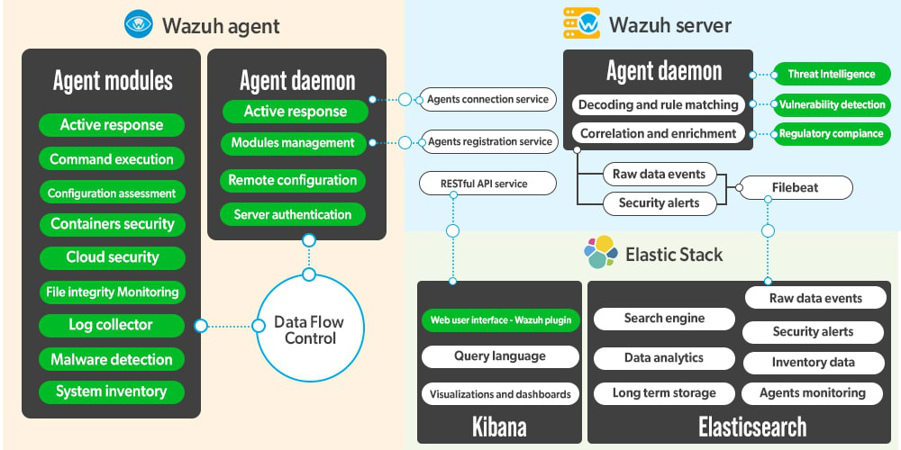

Wazuh
Introduction to Wazuh
We all know that today organizations have various endpoints (machines) running multiple services to execute business operations successfully. Today, even a small-scale organization has a minimum of 10 to 20 systems in its infra. These machines are constantly collecting data and generating logs. The problem is not big data! The actual challenge that organizations face is analyzing and utilizing these big data. These endpoints generate various events (records) crucial for analysis and creating alerts for critical security violations/ attacks. Organizations adopt SIEM (Security Information Event Management) solutions to tackle this problem.
It is essential to know two key terms to understand the actual meaning of SIEM:
- SEM – Security Event Management: it deals with collecting logs from endpoints.
- SIMSecurity Information Management: it deals with analyzing collected logs.
So the formula sums up something like:
SEM + SIM = SIEM (Security Information Event Management)By understanding the above formula, we can conclude that SIEM is a solution that helps the companies collect the logs and helps to convert the records into helpful information that later can be analyzed (as the logs are stored). At the same time, it also provides real-time monitoring and analysis capabilities and creates alerts when any rule violation or security attack occurs.
The prime aspect is Data Aggregation. In this phase, logged data is collected from various endpoints like firewalls, desktops and stored in a centralized database. These logs are adequately summarized for better visibility over suspicious events from a massive amount of records.
Listed below are some of the essential functionalities that exist/must exist in a SIEM:
- Log Collection
- User Activity Monitoring
- Real-Time Event Correlation
- Log Retention
- IT Reports
- Log Monitoring
- Rules and their mapping
- Integration of CTI (Cyber Threat Intelligence)
- Visualization Dashboards
There are a lot of industry-recognized vendors that are providing top-notch SIEM solutions to the companies. IBM QRadar, Splunk Security, LogRythm, etc., are some examples, to name a few. These solutions are in the premium range it means that one has to invest a reasonable amount for adopting these solutions. Yes, companies do invest as cyber defense is the priority. Still, it is not feasible for small-scale organizations or institutional bodies like schools or colleges to pay a hefty price just for security solutions.
Due to this, it is easy for these institutes/companies to rely on Open Source SIEM solutions. Even large-scale organizations adopt these open source solutions for better customization and scalability. However, the only caveat is that there needs to be a technical expert to implement these Open Source SIEM. Yes, there is complete, well-written documentation and guides from the vendor, but generally, these documentations are overlooked by non-technical folks. Secondly, it is possible to directly approach the vendor for deployment assistance, but it may come with a cost.
One of the well-known and well popular SIEM out there is WAZUH.
Wazuh is a threat prevention, detection, and response platform that is free and open source. It safeguards workloads on-premises, in virtualized, containerized, and cloud settings. Wazuh is utilized by hundreds of companies worldwide, ranging from tiny firms to major corporations. Wazuh is a security data collection, aggregation, indexing, and analysis tool that aids businesses in detecting intrusions, threats, and suspicious behavior.
Now let us understand the basic working and component workflow of Wazuh.
Wazuh’s platform includes security capabilities for cloud, container, and server applications. Log data analysis, intrusion and malware detection, file integrity monitoring, configuration assessment, vulnerability detection, and regulatory compliance help are examples of these services. The three components that make up the Wazuh solution are as follows:
- Wazuh agent:Provides prevention, detection, and response capabilities when installed on endpoints such as laptops, desktops, servers, cloud instances, or virtual machines. It is compatible with Windows, Linux, macOS, HP-UX, Solaris, and AIX.
- Wazuh server:examines data received from agents, processing it using decoders and rules and utilizing threat intelligence to hunt for well-known indicators of compromise (IOCs). When configured as a cluster, a single server can evaluate data from hundreds or thousands of agents and scale horizontally.
- Elastic Stack:indexes and saves Wazuh server alerts. Furthermore, the Wazuh and Kibana integration provides a rich user interface for data visualization and analysis. Wazuh settings and status are also managed and monitored through this interface.
The Wazuh platform can monitor agent-less devices such as firewalls, switches, routers, and network IDS, among others, in addition to agent-based devices. For example, systems can use Syslog to collect system log data, and its settings can be monitored by probing its data regularly. The Wazuh components and data flow are shown in the diagram below. It represents the Wazuh agent, Wazuh server, and Elastic Stack, which are the three critical components of the solution.
Wazuh agents check for malware, rootkits, and suspicious anomalies on the monitored systems. Hidden files, cloaked processes, unregistered network listeners, as well as discrepancies in system call responses, can all be detected. In addition to agent capabilities, the server component employs a signature-based approach to intrusion detection, analyzing acquired log data and looking for signs of compromise using its regular expression engine.
Listed below are some core functionalities of Wazuh:
- Intrusion Detection
- Log Data Analysis
- File Integrity Monitoring
- Vulnerability Detection
- Incident Response
- Regulatory Compliance
- Cloud & Container Security Monitoring
So to conclude, Wazuh is an excellent choice for Open Source SIEM, which is reliable, easy, and could provide an operational security workflow for strengthening the security posture.